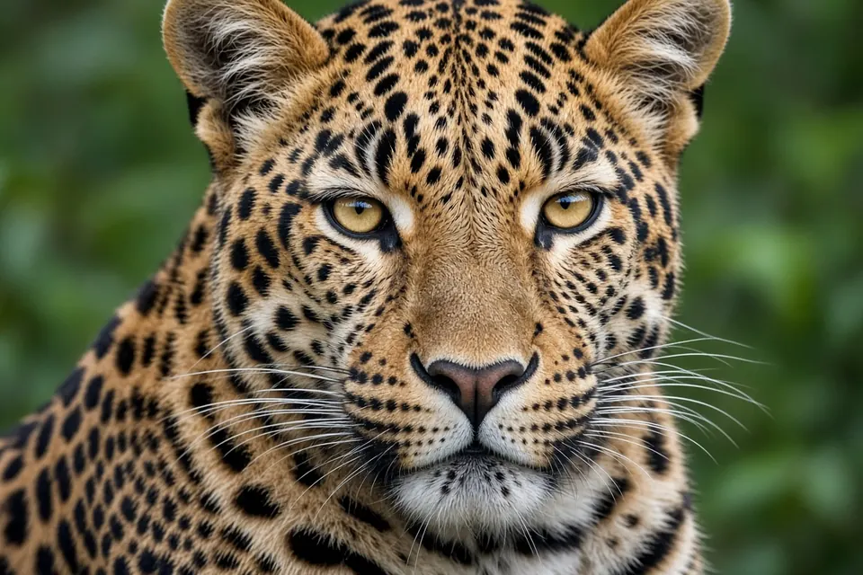

Home › Blog › How much does a leopard weigh?
How Much Does a Leopard Weigh?
A leopard weighs roughly 17 to 90 kilograms (37 to 198 pounds) across its whole range, but most adults are far from either end. San Diego Zoo Wildlife Alliance gives females 21 to 60 kilograms and males 36 to 75 kilograms, and the exact figure depends on the sex and where the leopard lives.

How much does a leopard weigh?
San Diego Zoo Wildlife Alliance lists adult female leopards at 46 to 132 pounds (21 to 60 kilograms) and adult males at 80 to 165 pounds (36 to 75 kilograms). It describes the leopard as the smallest of the large cats, a group that includes lions, tigers and jaguars.
The IUCN SSC Cat Specialist Group gives a wider range for the species as a whole: 17 to 90 kilograms in weight and 91 to 191 centimeters in body length, with a tail of 51 to 101 centimeters.
Why different sources give different numbers
Leopards live across Africa and Asia in very different habitats, and their size varies a lot between regions. The Cat Specialist Group says African leopards are typically the largest and can weigh up to 90 kilograms, while leopards from the Arabian Peninsula are small to average, generally only around 25 kilograms.
A fact sheet from the International Environment Library Consortium makes the same point. It lists the Persian leopard as the most massive subspecies at up to 90 kilograms and the Arabian leopard as the smallest at 20 to 30 kilograms. Measurements of leopards from Namibia, Cote d'Ivoire and South Africa reported in that fact sheet (Hunter et al. 2013) were 20 to 72 kilograms for males and 18 to 43 kilograms for females.
So a figure quoted for "the leopard" depends on which animals were measured. When you see a single number, check which population it comes from.
Are male leopards bigger than females?
Yes. The same fact sheet says males are 30 to 100 percent heavier than females, with about 30 percent heavier being typical. Males also have larger skulls with a distinct bony ridge on top, and larger canine teeth.
How long is a leopard?
San Diego Zoo Wildlife Alliance gives a body length of 3 to 6.2 feet (92 to 190 centimeters) and a tail of 25 to 39 inches (64 to 99 centimeters). The fact sheet adds that a leopard's tail is typically longer in proportion to its body than a lion's or a tiger's. You can read about how tails help big cats in our guide to why snow leopards have such long tails.
Small cat, big prey
Despite its modest size, the Cat Specialist Group says a leopard can kill prey two or three times larger than itself. San Diego Zoo Wildlife Alliance notes that leopards are strong enough to haul a kill up a tree, climbing as high as 50 feet (15 meters) with it, and that one leopard was seen dragging a young giraffe of about 220 pounds (100 kilograms) into brush. To see what they actually hunt, read what do leopards eat?.
Frequently asked questions
How much does an adult leopard weigh?
San Diego Zoo Wildlife Alliance gives 21 to 60 kilograms for females and 36 to 75 kilograms for males. The IUCN Cat Specialist Group gives 17 to 90 kilograms for the species as a whole.
What is the biggest leopard?
The Cat Specialist Group says African leopards are typically the largest and can reach 90 kilograms. A fact sheet from the International Environment Library Consortium lists the Persian leopard as the most massive subspecies, also up to 90 kilograms.
How much heavier are male leopards than females?
Males are 30 to 100 percent heavier, and about 30 percent heavier is typical, according to the International Environment Library Consortium fact sheet.
Is the leopard the smallest big cat?
San Diego Zoo Wildlife Alliance calls it the smallest of the large cats, which it lists as lions, tigers, jaguars and leopards.
How long is a leopard?
Body length ranges from about 92 to 190 centimeters, plus a tail of roughly 64 to 99 centimeters, according to San Diego Zoo Wildlife Alliance.
Cite this page
APA: BigCatWise. (2026, November 13). How much does a leopard weigh?. https://bigcatwise.com/blog/how-much-does-a-leopard-weigh.html
MLA: "How much does a leopard weigh?." BigCatWise, 13 Nov. 2026, bigcatwise.com/blog/how-much-does-a-leopard-weigh.html.
Chicago: BigCatWise. "How much does a leopard weigh?." Last modified November 13, 2026. https://bigcatwise.com/blog/how-much-does-a-leopard-weigh.html.
Please check the date you accessed the page and adjust to your teacher's or journal's style guide.